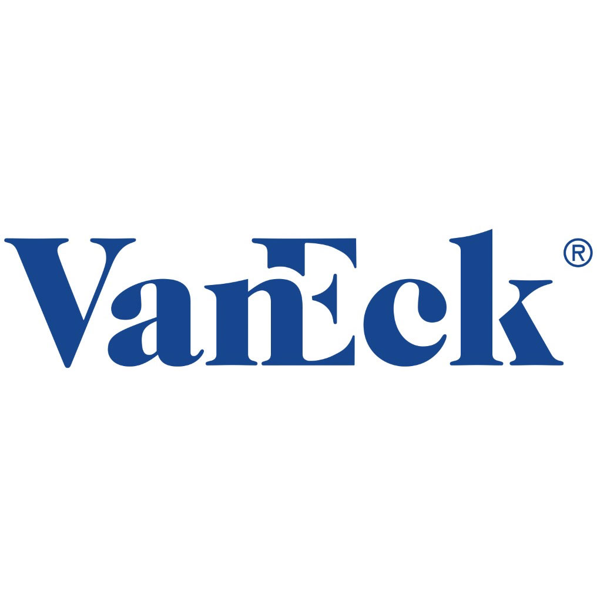
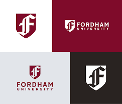
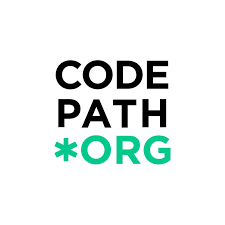
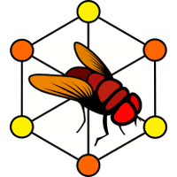

Available for opportunities
IT & Cyber
Specialist.
I work across cybersecurity, IT infrastructure, and data systems - building secure environments, automating workflows, and solving real-world technical challenges.
Companies & organizations I’ve worked with





3+ Years Experience
5+ Projects Shipped
4 Domains Covered